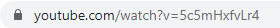
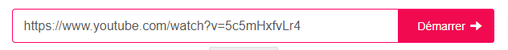
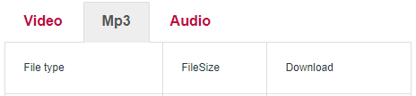
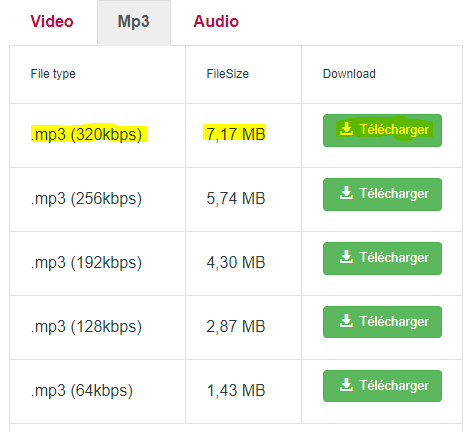

Comment télécharger une musique youtube.
Ce guide va vous apprendre plusieurs astuces sur votre navigateur WEB ou sur votre PC.
Pour commencer je vous conseille d' utiliser Google Chrome. cliquer ici pour télécharger chrome.Besoin d' aide.
Passons à la manipulation:
- Repérer votre musique a télécharger.
- Copier l' url de la musique. Cela devrait ressembler à, voir ci-dessous:

- Allez sur le site: ici
- Coller l' url dans la barre de recherche du site en pressant les deux touches simultanéments ctrl et v.
ceci devrait ressembler à, voir ci-dessous:

- Puis clicker sur demarrer.
- Cliker sur mp3 comme ci-dessous

- Cliker sur le bouton télécharger qui à la plus haute qualité auditive.
.
comme cela, voir ci-dessous:

- Cliker sur télécharger.Bravo vos avez réussi👍.
Comment avoir un blocker de pub sur un site est sur des vidéos youtube.
Ce guide va vous permettre d' avoir 0 pub (cool non) est encore plus c' est gratuit